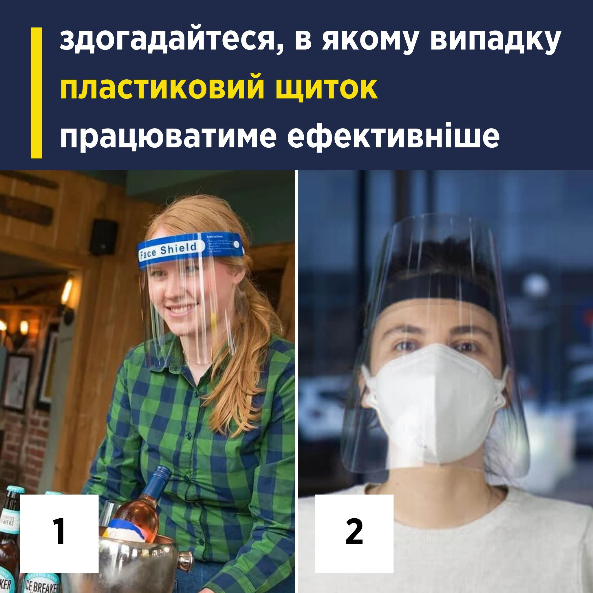

Як правильно користуватись маскою та щитком для захисту від вірусу SARS-CoV-2
Якщо ви користуєтеся пластиковим щитком для захисту від вірусу SARS-CoV-2 під час роботи, чи в будь-яких інших умовах — зверніть увагу. Часто помічаю, як, наприклад, касири чи продавці залишаються в щитку, при цьому взагалі знімають маску чи зсувають її на підборіддя. Не варто так робити. Щиток не є альтернативою масці та працює лише в комплексі з нею.
💧 Зараз ми знаємо, що вірус SARS-CoV-2 передається переважно через краплі, тобто краплинним шляхом (droplet transmission), які вилітають з носа та рота під спілкування, крику, співу, кашлю, чхання та дихання, під час тісного контакту з інфікованою людиною. Тому дуже важливе дотримання фізичної дистанції бажано у 2 метри та бар’єрний захист — як маска чи респіратор, які закривають ніс та рот, а не підборіддя.
💦 Повітряно-крапельний шлях (airborne transmission) має на увазі менші краплі, пил, частинки, які здатні затримуватися в повітрі та залишатися в ньому задовго після того, як вони потрапили в повітря. Так само ці частинки чи краплі можна вдихнути під час тісного контакту з інфікованою людиною, але також інфікування можливе не під час тісного контакту.
Висока ймовірність інфікування таким шляхом здебільшого належить збудникам, які викликають кір, туберкульоз чи вітрянку — коли навіть задовго після того, як інфікована людина залишила приміщення, вони здатні залишатися в повітрі та є дуже заразними. Наприклад, збудник кору може жити в повітрі та на поверхнях до двох годин після того, як хвора людина залишила приміщення. Щодо туберкульозу важливо пам'ятати, що людина з активною формою хвороби, та яка не приймає ліки, може виділяти туберкульозні палички.
Щодо вірусу SARS-CoV-2 та повітряно-крапельного шляху його передачі CDC вказують наступне: такий шлях не найголовніший у передачі в громаді, але все ж можливий. Передусім, в закритих приміщеннях з поганою вентиляцією, а також в приміщеннях, де зберігається висока концентрація частинок в повітрі через більшу інтенсивність дихання — спів, крик чи під час занять спортом. https://bit.ly/34dTZbt
В медичних умовах повітряно-крапельний шлях інфікування найбільш ймовірний під час проведення процедур з утворенням аерозолю. Це, наприклад, бронхоскопія чи інтубація трахеї. Саме тому є чіткі вимоги до інфекційного контролю в лікарні та до засобів індивідуального захисту для медиків, коли вони виконують такі процедури.
Повернімося до щитків та масок
Щиток — це додатковий бар’єрний захист. У ньому зручно, бо він закриває все обличчя — очі, ніс та рот. Щитки, зокрема, запобігають тому, що людина буде зайвий торкатися свого обличчя брудними руками. Також їх можна носити людям, які мають порушення слуху, і використовують мову жестів для спілкування.
Але з пояснення про шляхи передачі стає зрозуміло, що сам лише щиток не здатний нормально затримати вірус під час вдиху чи видиху, на це вказують і дослідження. https://bit.ly/3dHQywB Потенційно, вірус може проникати через прогалини, які залишаються без захисту. Саме тому щиток повинен доповнюватися маскою. Це дуже важливо у тісних приміщеннях, де перебуває багато людей, та немає можливості повноцінно його провітрювати та дотримуватися дистанції, чи де погано працює вентиляція. Саме такими приміщеннями є деякі магазини чи супермаркети.
👇 Як використовувати щиток правильно:
- Носити разом з правильно одягненою маскою, тобто маска повинна закривати рот і ніс. Іншого ефективного варіанту носіння маски не існує. CDC та інші організації не рекомендують використовувати щиток як альтернативу масці. https://bit.ly/3je0MpP
- Перевіряти, чи щиток нормально сидить на обличчі. В ідеалі він повинен бути трохи довшим за підборіддя або ж бути на рівні з підборіддям. Добре, щоб він прикривав обличчя з боків також та лоб.
- Важливо також дотримуватися звичних правил — миття рук до і після зняття щитка.
- Щодо миття та дезінфекції. За щитком рекомендують доглядати з дотриманням рекомендацій виробника. Якщо їх немає, то можна мити щиток звичайним мийним засобом та теплою водою, щоб прибрати бруд.
- Дезінфікувати бажано розчином на основі хлору, адже спиртові розчини можуть з часом пошкодити пластикове покриття та клей. Це якщо щиток багаторазовий. Зрозуміло, що одноразовий щиток потрібно утилізувати одразу ж після використання.
Засоби індивідуального захисту ефективні лише тоді, коли використовуються правильно. Будь-яке інше їхнє використання створює ілюзію захисту, але його не дає. Тож будьте уважні та не наражайте себе та інших на небезпеку лише через те, що вам незручно чи не хочеться натягнути маску на ніс чи взагалі її вдягти. Від цього залежить ваше здоров’я та здоров’я людей навколо.
Джерело: офіційна сторінка Уляни Супрун у Facebook